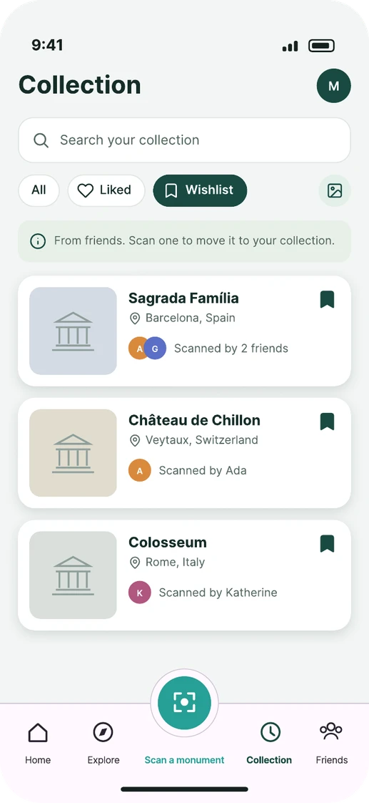
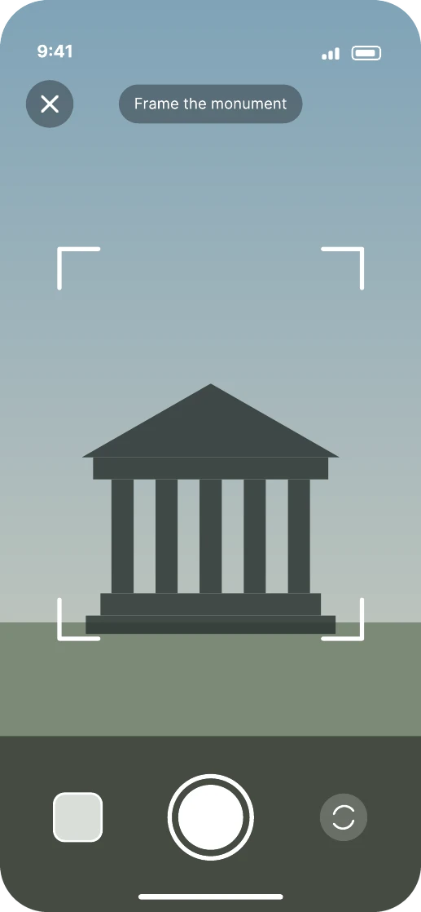

Valentin Walendy
I study computer science at EPFL and like problems where data, models and algorithms meet. When I travel, I take photographs; most of this site is those.
- Studying
- BSc Computer Science, EPFL, Lausanne
- Summer 2026
- Data & AI intern, Infosys, Bangalore
- Interested in
- Data analytics, computational modelling, algorithmic problem-solving
Selected work
Roam
Snap a monument, discover its story.






Point, shoot, know.
A guide written for you.
A travel journal in your pocket.
The world, through your friends.
An Android app that turns a photo of a monument into a short guide to its story, keeps it in a travel journal, and lets you share it with the friends you travel with.
View the code on GitHubOther projects, including ReChor, a Swiss public transport route planner, are on my GitHub.
Photography
In summer 2026 I spent two months in India for my internship, and travelled whenever I could: Bangalore, Hampi, Varanasi, Agra, and on to Nepal. Photography became the way I kept those places.
See the destinations